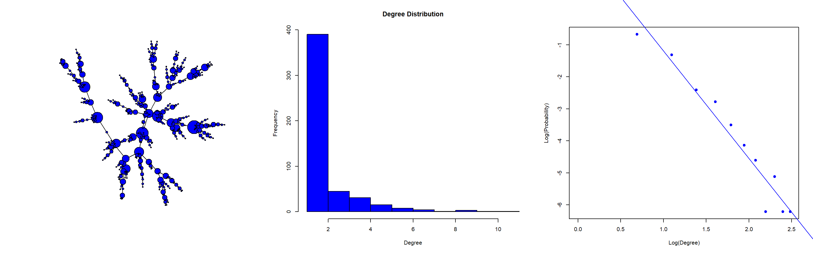
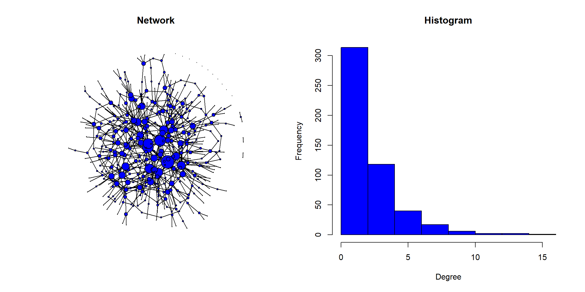

Before explaining the model, let’s generate a graph with it and see that it actually generates a power law degree distribution

then we immediately see that the degree distribution corresponds to the one we were looking for since most of the nodes are not too connected while there are some nodes with a very large number of nodes (hubs).
## The degree exponent using cutoffs is 3.59
## The average degree is 2.0
## The average distance is 10.1Following the summary we made we can see that this network is consistent with a value \(\gamma > 3\) in terms of its average distance since \(\log(N)/\log\langle k \rangle \approx 9\).
This model depends on two key ideas of a network formation:
\[\begin{equation} \Pi(k_i) = \frac{k_i}{\sum_j k_j} \end{equation}\]
this means that the node can actually connect to any node in the network, but the probability it does is weighted by the degree of the other nodes.
In this model, the initial configuration is not specified, which means that we begin with \(m_0\) nodes linked in some unspecified form and then after \(t\) steps, the network will have \(N = t + m_0\) nodes and we have generated \(mt\) new links. This generative process of addition of links can lead to the rich-gets-richer phenomenon: larger nodes are more likely to be connected than smaller ones.
Let’s analyse how the previous properties lead to a generation of a power-law degree distribution. For this we will approximate the degree \(k_i\) by a continuous variable which represents its expected value over the many possible realizations of the process. Then we can say that the evolution of the degree with time is given by the number of \(m\) times the linking probability
\[\begin{equation} \frac{dk_i}{dt} = m\Pi(k_i) = m\frac{k_i}{\sum_{j=1}^{N-1} k_j} \simeq \frac{k_i}{2t} \end{equation}\]
where the last step results from considering that we have the usual 2L as the sum of the degrees, then
\[\begin{equation} k_i(t)= m\left(\frac{t}{t_i}\right)^{\beta}, \qquad \beta = \frac{1}{2} \end{equation}\]
where \(t_i\) is the time at which the vertex \(i\) is added to the network and \(\beta\) is the dynamical exponent. This equation has several important implications
Given the equation for the degree dynamics, we can write that
\[\begin{equation} P(k < k_i) = P\left( t_i > \left(\frac{m^{1/\beta}t}{k^{1/\beta}}\right)\right) \end{equation}\]
if we assume that we are adding nodes at a constant time pace
\[\begin{equation} P(t_i) = \frac{1}{m_0+t} \end{equation}\]
then we can write that
\[\begin{equation} P\left( t_i > \left(\frac{m^{1/\beta}t}{k^{1/\beta}}\right)\right) = 1- \frac{m^{1/\beta}t}{k^{1/\beta}(m_0 + t)} \end{equation}\]
now the degree distribution can be obtained taking the derivative of this cumulative distribution function with respect to \(k\), the result is
\[\begin{equation} p(k) \propto 2m^{1/\beta}k^{-(1/\beta + 1)} \end{equation}\]
This equation has deep implications:
If any of the two properties of the BA-model fails to be present we find ourselves with different problems.
In general in the BA-model triangles are not formed very easily since nodes are added independently and one at a time. It can be seen that the average clustering coefficient is
\[\begin{equation} \langle C \rangle = \frac{m}{4}\frac{(\log N)^2}{N} \end{equation}\]
this result, together with the limitation of the degree exponent, \(\gamma = -3\), are the main problems of the BA-model.
On the other hand, the average path length, for \(m>1\) and large \(N\) follows
\[\begin{equation} \langle d\rangle\sim\frac{\log N}{\log\log N} \end{equation}\]
which deviates from the random graphs due to the dependency in the denominator, the shriniking factor that we found in the scale-free networks in the critical point.
The igraph function for the BA-model allow us to introduce an arbitrary value for \(\gamma\). Not only that, it also let us introduce what is known as the zero appeal, i.e. the fact that \(\Pi(0)\neq 0\). In other words, the probability that an isolated node can still receive a link.
It turns out that the probability that a node receives an incoming edge is proportional to the sum of an initial attractiveness and the number of its incoming edges, \(\Pi(k_{in}) = A + k_{in}\) and then the degree distribution follows \(P(k)\sim k^{-\gamma}\) with \(\gamma = 2 + \frac{A}{m}\), then this zero appeal does not change the scale-free nature of the degree distribution. It just changes the degree exponent.
To generate a BA-model we use the barabasi.game() function where we find, among other arguments
out.dist = c(0.25, 0.5, 0.25) would mean that 25% of the times the node will be isolated, 50% will generate one link and 25% will generate two links. See that if you choose this option, m is ignoredset.seed(1)
ba_model <- barabasi.game(n= 500,
power = 1,
# m = 1,
zero.appeal = 10,
directed = FALSE,
out.dist = c(0.05, 0.55, 0.4),
start.graph = graph.formula(1--2)
)
par(mfrow = c(1,2))
plot(ba_model,
layout = layout.fruchterman.reingold,
vertex.label = "",
vertex.color = "blue",
vertex.size = degree(ba_model),
edge.color = "black",
main = "Network")
hist(degree(ba_model),
col = "blue",
xlab = "Degree",
ylab = "Frequency",
main = "Histogram")
Can you estimate the degree exponent? Now, let’s find the characteristic values of the network
data.frame(AverageDegree = mean(degree(ba_model)),
AveragePathLength = average.path.length(ba_model),
Diameter = diameter(ba_model),
AverageClusteringCoeff = mean(transitivity(ba_model, "local"), na.rm = TRUE))| AverageDegree | AveragePathLength | Diameter | AverageClusteringCoeff |
|---|---|---|---|
| 2.62 | 5.728715 | 14 | 0.003369 |
If we had not chosen the out.dist option, the clustering coefficient would be zero. In this case we obtain a very low but not zero value. This result puts the focus on the main problematic of BA-models: it may obtain the right degree distribution and the small average length, however it fails to reproduce the high clustering coefficient of real networks (apart from the exponents found in real networks).